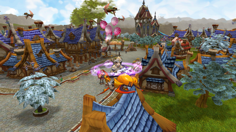
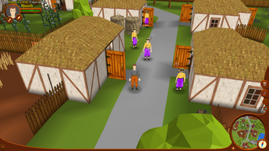
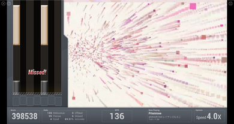
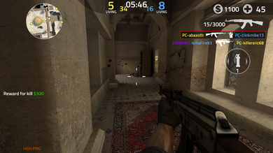

Table of Contents
- Introduction
- Death of Flash
- The new era of browser games
- List of my recommended browser based games
- Ending notes
Browser-based games in the modern internet
Introduction
Browser-based games had such a unique evolution. Started out as games with no visual update on the game world; if you wish to get updates on what is happening in the game, you have to manually refresh the page or interact within the game so that the page refreshes on some sort.
Examples of these designs are still present in several modern browser games, such as Kingdom of Loathing and Sigmastorm, as seen in the figures above. In the Kingdom of Loathing, it shows iframes to separate different UI elements. You interact with game elements using hyperlinks where each link corresponds to a user action (of course, they are neatly hidden in images to make them presentable).
Once the interaction is made, the page refreshes. This is also similar to Sigmastorm, but user actions are done in hyperlinks instead of having game elements interact via hyperlinks. The game is represented in a grid; if you want to move, you click on the arrows in the map; if you're going to interact with what that current tile has to offer, you click on the links available in the location details.
Each action will refresh the page in some way, shape, or form. Sometimes it does not have to be the entire page, just like in Kingdom of Loathing's case, where iframes are instead updated. It is a pretty interesting trick, but such designs are limiting for game designers.
In contrast, non-browser games are usually detailed and offer live visual updates on what is happening in the game world without user interaction. The closest one you can have with such a design is to install an auto page refresher on your browser.
Then here comes browser plugins such as Flash Player, Shockwave, Java applets, etc. These plugins offered something that browsers normally do not. It extended the features of what the browser can do with the requirement that these plugins must be installed to make these pages work.
Shortly, games like Club Penguin, Habbo Hotel, Runescape, and Drakensang started popping out of nowhere, offering the same experience downloaded MMOs have but right before your browser. Of course, they are not as detailed as their downloaded counterparts because of space and internet bandwidth issues, but the fact that they can be accessed as long as the plugin is installed was good enough to spread gaming to the masses.

However, a paradigm shift from browser plugins started around 2013-2014. The movement began when Steve Jobs initially rejected Flash player on iPhone in 2011. The tech sector has been working aggressively after that to replace Flash player with something more native and built-in within the browser.
As browser-plugin applications started to die out in favor of the native ones available within a browser, so did the browser plugins themselves. But browser games were mainly still developed in Flash as it was the most dominant platform to create games until the death of Flash was finally settled around January 12, 2021, when most browsers stopped using plugins.
With such a long introduction, the question now is. With the evolution of browser games from native to plugin back to native. How far has it come? Did the shift away from plugins do good for browser-based gaming? Or did it cause a significant hit to the browser-based ecosystem? Let us discuss.
Death of Flash player
The death of Flash was long announced. Before its announcement, everyone in the tech sector had witnessed the evolution of HTML as it slowly replaced and acquired the unique features of these browser plugins. It was already speculated that sooner or later, plugin support would cease to exist for the browsers, and thus, it was discouraged from creating applications relying on the browser plugins.
Browser-based applications that relied on those plugins have already planned to move out from them in favor of either utilizing HTML's current new features or becoming a downloadable application. In the former's case, one example is Habbo Hotel which offered both a downloadable client and an HTML5 client, while the latter is Runescape, which went into a standalone client.
Other good examples of games that transitioned away from Flash player to HTML5 are Facebook games such as Candycrush, TetrisBattle, and Farmville. Initially, these versions used to be powered by Flash player but slowly transitioned to HTML5.
The new era of browser games
Now that HTML5 is the only way moving forward to play browser games. It did pave the way to things that were not imagined before, such as Web assembly. Web assembly introduced speeds on web-based applications that were not available there back. A good example is two MMORPG browser-based MMORPGs, Flyff Universe and Genfanad.
Flyff Universe is an HTML5 port of an old MMORPG named Flyff. But this one was ported via web assembly, and assets are downloaded and cached on the fly. Flyff Universe is basically an improved version of the original. It even introduces graphical techniques not in the original, such as Render-scaling, advanced shader effects, and longer render distance. The performance of Flyff Universe is very impressive. Even a 2015 Macbook Air can play this game without issues.
The performance of Flyff Universe is very impressive. Even a 2015 Macbook Air can play this game without issues.
On the other hand, is Genfanad. It is a new browser MMORPG inspired heavily by the first version of Runescape, Runescape Classic. It features 2d sprites for characters and NPCs and a 3d environment. A hybrid 2d and 3d. This one is written purely using JavaScript.
Although the graphics are not as complex as Flyff, the same MacBook Air struggles to play the game in even 20fps. I only get 15 fps, even in a noncrowded area. This goes to show how great web assembly is in terms of performance. Game developers wishing to create complex scenery can rely on web assembly to speed up their process.
What is great about web assembly is you do not need to learn web assembly. You can use an existing language such as C/C++ or Rust and use their compiler to compile it to wasm code. Thanks to this, HTML5 ports of games such as SuperTux2, FreeCiv, Doom, and even Ragnarok Online are possible with minimal effort (no need to rewrite an engine from scratch).
Actually, you don't even have to go that far. Unreal Engine and Unity, for example, can output game projects to wasm. The former relies on plugins, while the latter is built-in.
As the figure above shows, game developers can develop graphically sophisticated games from a well-known game engine and export them easily to HTML. Really impressive how far we have come in game development. Allowing us to deliver games on a variety of platforms.
List of my recommended browser based games
There are tons of browser-based games out there. So take this list as my recommended picks instead of being like the absolute best browser games out there. I mainly play downloaded games, with a few notable exceptions. So I may have missed some great browser games that I am not aware of that exists.
Additionally, these lists are mainly multiplayer ones. So if you are looking for a single-player browser-based game, this list is not for you. Mind you, some of these games may have an offline/play with AI feature, but they're mainly multiplayer games.
I also omit browser-based games not officially ported or endorsed by their intellectual property owner.
Note: This table is rendered in Javascript; you can expand the row and read the description by clicking on the [+] plus button or the game's name.
MMORPG List
These two games that I have previously mentioned are the ones I recommend when wanting to play an MMORPG.
- Flyff Universe - An HTML5 port of Flyff 2004:
 https://universe.flyff.com - Genfanad - MMORPG game inspired by Runescape Classic:
 https://genfanad.com
Casual List
These games are meant for casual audiences.
- Tetr.io - Free-to-win stacker game in the same genre as tetris:
 https://tetr.io
https://tetr.io - Bemuse - Online web based rhythm game:
 https://bemuse.ninja

Shooter List
If you want to play shooter games, these are the two I recommend
- Forward Assault - A popular FPS game known for its 3d graphics:
 https://www.crazygames.com/game/forward-assault - Battle dudes - Fast paced 2d multiplayer shooter game:
 https://battledudes.io/
https://battledudes.io/

Strategy
If you want to battle your brains out, then these games are for you
- Tzared - A medieval strategy game
 https://tza.red
https://tza.red - Lichess - Free open source server ran by a non-profit organization
 https://lichess.org
https://lichess.org


Ending notes
As you can see, you can get entertained even in the new era of browser-based games. Certainly, the shift of these games away from plugins paved the way for unique implementations that were not possible before.
For example, Flash may have been a dominant platform for developing browser-based games, but it was limited in what it could do. Although later in Flash's life, it could render in 3D. There were better platforms to create 3D games on.
I remember that even if Flash could do 3D rendering, the hardware acceleration aspect was unavailable across all operating systems. This means certain games are not playable when played on Mac or Linux. Not to mention the availability of the plugin it needs as well.
Of course, it was Flash, Adobe Shockwave, and Oracle Java. Shockwave was superior in 3D games but was less well known because of management decisions. Frankly, it was true that Shockwave games were mostly slow to load because it packed more assets for players back then to download, but it could push more stuff than Flash.
On the other hand, Java applets are in the same competition league as Shockwave but are more popular. And by I mean the same league, was able to pack sophisticated 3d graphics right in your browser. Part of the reason people do not remember Shockwave is because of poor leadership reasons. However, based on experience, Shockwave was far more popular than Java applets for games.
So imagine, if you want to play a couple of browser games back then, you not only have to install Flash player, but also possibly Shockwave and Java too. Not to mention these plugins had limitations. Like Flash player being limited in what it can do with 3d, Shockwave being locked down to Windows only, or Java being difficult to program games with in general because if you want to appeal to a larger set of userbase, you have to optimize the game. This is why Runescape originally had to load in regions, where when a player reaches the edge of a region, it loads the next closest region and unloads the currently loaded one.
The creation of WebGL and Webassembly paved the way for possibilities that were not there before. Being able to port full pledge games right in front of your browser. This is an interesting thing to consider as these technologies allow the distribution of games regardless of Operating System.
So what can I say? The shift away from plugins certainly did good for browser gaming in general. Although it was sad to see a lot of these great games go. There have been archiving projects [1] that aim to restore these plugin-based games to a playable state, and for that, I am grateful.
Especially some of these games that were restored have had their micro-transaction shop revived with everything free in it. Which I find very, very cool.